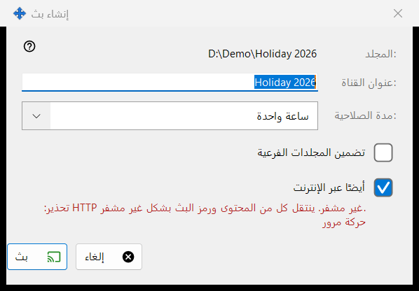
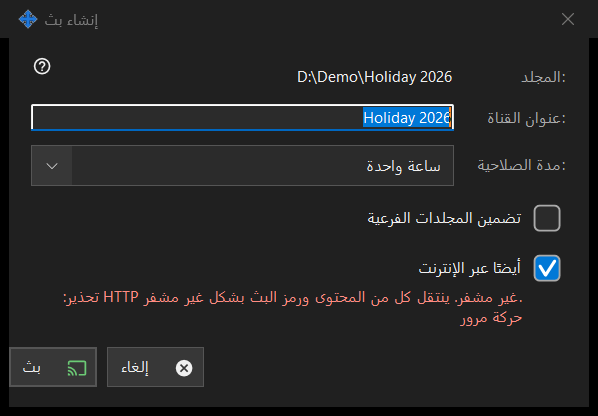

إنشاء بث
الغرض من هذه النافذة
تضبط بثًا واحدًا قبل إنشائه: عنوانه ومدة بقائه وهل يصل إلى ما بعد الشبكة المحلية. تُفتح من الزر ..إنشاء بث في نافذة عمليات البث للملف أو المجلد المختار. لا يُنشأ شيء ولا يُرسل حتى تضغط بث.


بهذا الترتيب
- تحقق من المسار في السطر الأول (:المجلد أو :الملف).
- عدّل :عنوان القناة؛ ويبدأ باسم المجلد أو الملف.
- اختر :مدة الصلاحية.
- للمجلد، حدّد تضمين المجلدات الفرعية إن احتجت إليها.
- أبقِ الخيار أيضًا عبر الإنترنت محددًا أو ألغِ تحديده.
- اضغط بث (Enter) أو إلغاء (Escape).
عناصر النافذة
العنوان ومدة الصلاحية
عنوان القناة هو ما تعرضه قائمة عمليات البث. تتيح مدة الصلاحية 24 ساعة (الافتراضي)، وساعة واحدة، و7 أيام، وحتى الإلغاء، وهو بلا تاريخ انتهاء ويبقى إلى أن تلغيه في نافذة عمليات البث.
تضمين المجلدات الفرعية
يظهر فقط عندما يكون الهدف مجلدًا، وهو غير محدد افتراضيًا. يحدد ما إذا كانت ملفات المجلدات الفرعية للمجلد المبثوث مشمولة.
أيضًا عبر الإنترنت
يكون محددًا ما لم تُبقِ إعدادات المشاركة عمليات التصدير على الشبكة المحلية فقط. وعند تحديده يحمل الرابط أيضًا، إلى جانب العنوان المحلي، عنوان IPv6 وعنوان الإنترنت ذا المنفذ المعاد توجيهه لهذا الكمبيوتر إن كانا معروفين. ويؤدي تحديده إلى نقل مدة الصلاحية من 24 ساعة إلى ساعة واحدة (ويمكنك إعادتها) ويُظهر تحذيرًا أحمر: حركة HTTP غير مشفّرة، لذا ينتقل المحتوى ورمز البث دون تشفير. يستطيع أي شخص يملك الرابط قراءة ملفات البث حتى تنتهي صلاحيته أو يُلغى. ألغِ تحديد المربع لإبقاء البث داخل الشبكة المحلية.
بث وإلغاء
يكتفي الزر بث بإعادة اختياراتك إلى نافذة عمليات البث، التي تنشئ البث وتنسخ رابطه. أما الزر إلغاء فيغلق مربع الحوار ولا ينشئ شيئًا.